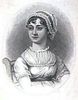

Author of some of the most highly regarded and widely read novels written in English, Jane Austen was nearly unknown as a novelist during her lifetime (1775 – 1817). The daughter of an English clergyman, she briefly attended boarding school with her sister. The greater part of her education was more informal, reading books recommended by her father and brothers. Austen began writing stories, plays, and poems in her teens for the entertainment of her family. She authored six complete novels, two of which were published after her death. Austen also wrote two incomplete novels. A favorite of filmmakers, Austen's best-known novels—Pride and Prejudice, Sense and Sensibility, Emma, and Mansfield Park—have been adapted into successful films and mini-series.
Books By Jane Austen
1. Emma
2. Persuation
3. Sense and Sensibility
4. Northanger Abbey
5. Mansfield Park
6. Lady Susan
7. Sanditon